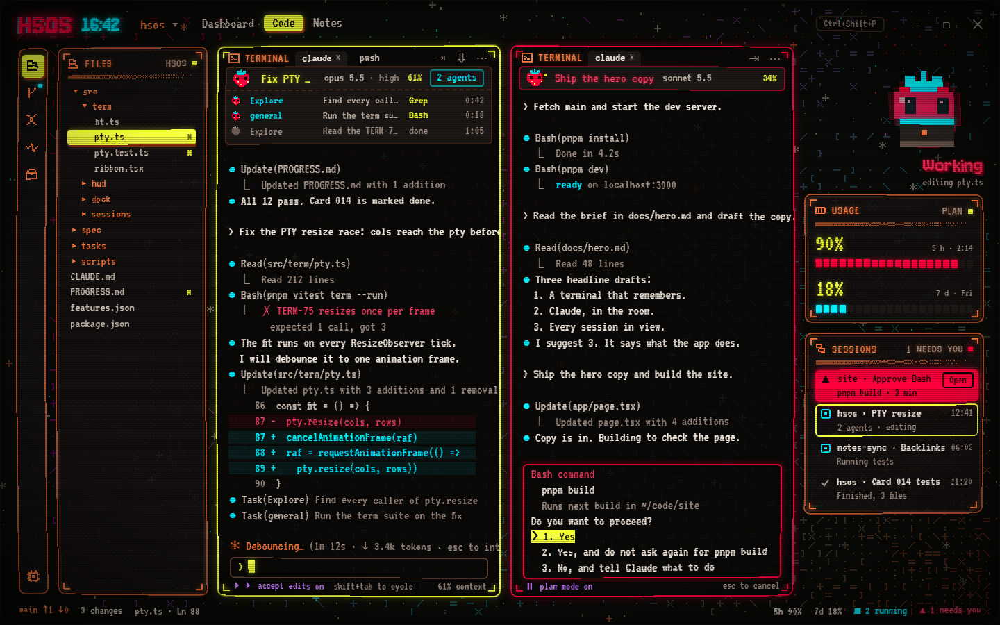

Code page layouts, Phosphor
Three ways to lay out the Code page in the Phosphor look. Every option shows the same moment: the left terminal is focused, Claude is working in it with two subagents, and its session ribbon is expanded. The right terminal's session needs you for a Bash approval. Click a still to open it live; move the mouse to stir the dust and to make the strawberry look at you.
A. Classic dock
The spec's layout as written: the activity rail, Files, two terminals side by side, and the HUD panel on the right with the strawberry free on top. It holds the most at once, but each terminal is only about 400 px wide, so the ribbon drops its folder, repo and mode and the chat name gets cut.

B. Stage
The focused terminal takes the stage at about 860 px, so the ribbon shows every part. The second terminal sits beside it at the top, with a compact HUD under it: the strawberry, usage and the two sessions that matter. Files folds into the rail until you open it.

C. Open air
Closest to the Dashboard. Files and the HUD lose their boxes and float over the dust, with the strawberry top right where it lives on the Dashboard. The terminals are stacked, full width, framed only by corner brackets, and more see-through, so the steam rising from each session's ribbon shows behind the text.